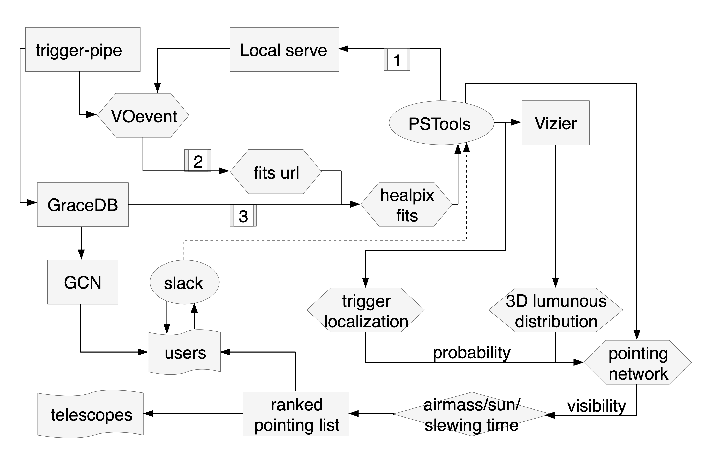

Reference¶
I will outline the pipeline procedures here:
- Manual mode:
such man mode will let you go firstly to
manschedule.man_searchwith healpix fits and telescope options. Then, if read parameters from configure file, and from these parameters, decide if you would do a trigger search, or normal search. trigger search is defined as a searching approach that let your telescope network (pointing list) generated based on some triggers, either is GW/GRB/etc, or galaxy counts/mass, or a combination. normal search would only create a network depending on the FoV of telescopes, and then one can apply further constrains, from e.g. airmass, extinction, or just want to avoid duplicated pointings. then, will go to the schedulerpstdef.main, together with fits file, if is trigger search, and the params list. - Auto mode:
such auto mode will put you first in
autogcndef.process_gcnif received any triggers. and the information extraction was then performed, including downloading the trigger healpix file. Afterwards, will also go to theautogcndef.process_gcn.